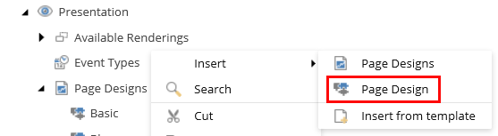
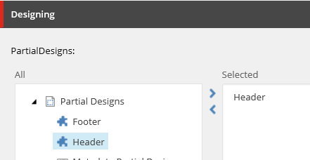

Create and assign a page design in the Content Editor
Work with groups of partial layouts to create the design for a page.
You work with reusable pieces of content and layout. A page design is a group of partial layouts that make up the design of a webpage.
For example, you may need a reusable page structure for a blog page. By creating a page design that includes the partial designs that you need for a blog page, you create a basic template that content authors can use to create content without having to worry about the design of the page.
You can work with page designs in both the Content Editor and the Experience Editor.
Warning
Do not add components directly to page designs. Page designs cannot hold the information on their own, but refer to the information stored in the partial designs. So if you add components directly to the page designs, they do not render on the page.
A page design determines the layout of a page and consists of partial designs. You can add page designs to the presentation folder of your site and select the partial designs that you want to add.
To create a page design:
In the content tree, on your site, click Presentation, right-click Page Designs, click Insert, Page Design.
 Note
If you want to add a group of related page designs, click Page Design Folder. This can be convenient if you have a complex site that requires a large number of partial designs. You can divide your page into sections of partial designs, for example, blogs, news, products, and careers.
Enter a name for the new page design and click OK.
In the Designing section, select the partial designs that you want to add, click the right arrow to move them to the list of selected items, and then save it.
 Right-click the new page design, and then click Experience Editor to view your design.
Note
If a page design is not in use, you might want to delete it. To delete a page design in the Content Editor, right-click the page design and click Delete.
You can use page designs to map content types to your page layouts. By doing this, you keep the layout of your site consistent. For web pages that you use often, such as landing pages, product pages, and navigation pages, you can keep them consistent by assigning a page design to the template for that page. In this way, you link the content to the design.
To assign a page design to a template:
In the content tree, go to your site, click Presentation, Page Designs, and then click the Content tab.
In the Designing section, select a template in the left column and, to associate it to a page design, in the right column, select the page design.
Note
You can also assign page designs to specific pages. This might be necessary when you need a page that you normally don't use very often, such as for example a release notes page. To assign a page design to a single page, go to your site and select the page. In the Designing section, select the design from the drop-down list and save the changes.
Right-click the page and click Experience Editor to view the result.